About me
I started my adventure with programming when I was 12 years old. I dealt with the graphic design on
internet
forums. I could spend long hours staring at the code, choosing the right colors, fonts and details. I
was
doing it purely as a hobby, and to be honest at the time, I didn't think a career in programming was
possible for me. I had a vision of many professions before me, such as a tattoo artist, vet or dentist,
and
I was wading towards them. I devoted far too much time to the goal, not to what I really enjoyed, but I
think nothing happens without a reason.
How my path to the place where I am today looked like made me aware and "who i am" a lot.
Finally, I feel like I'm in the right place and I'm developing in a field that really interests me.
If you want to know anything about me, ask me. Contact me is at the bottom of this page.
More about my education
Skills
In 2020, I started studying at the Software Development Academy on the FullStack Java developer course.
It
was then that I began to grasp the basics of programming and develop myself in programming. I decided
that
Frontend gives me more pleasure than pure Java, and despite the ongoing course, I started to develop
more in
this direction. Below is a list of some of the skills I have learned.
HTML 5
CSS 3
JavaScript(ES6)
Bootstrap 4/5
DOM Manipulation
React.js
Node.js
Web Design
Angular
Design patterns
SQL
Github
More about my projects